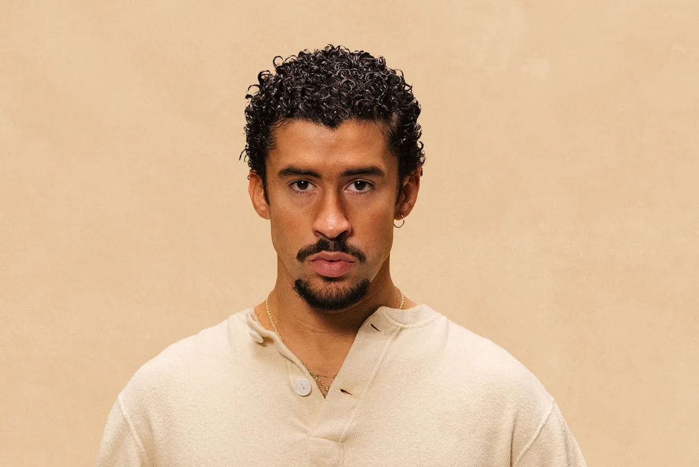
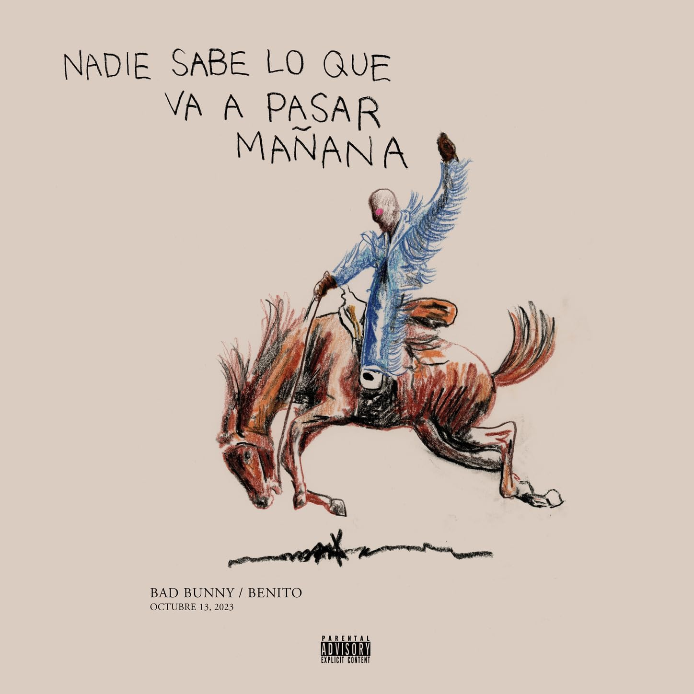
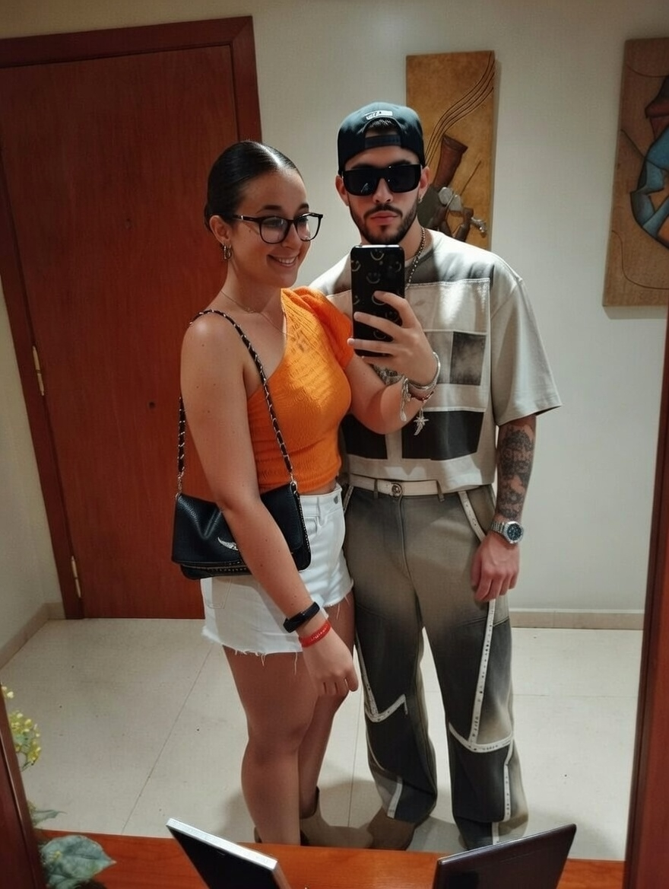

Foto del poderos Conill Dolent.

El millor album de la història del genere urbà.
Quan era el rei del trap.

El seu últim llançament. Album anomenat "Debi Tirar Más Fotos". Premiat com el millor disc de múscia urbana de 2025.

Foto amb el deu Bad Bunny.